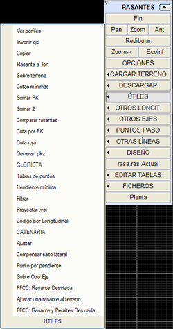[ARAÇLAR] alt menüsünde gruplandırılmış olarak, kırmızı kot tanım verilerini işlemeye, dönüştürmeye, analiz etmeye ve oluşturmaya olanak tanıyan bir dizi araç sunulmaktadır. Bunlar aşağıdaki bölümlere ayrılmıştır:
Genel araçlar
Bunlar şunlardır:
- Enkesitleri gör:
Yüklenmiş olan dosyanın enkesitlerini ekranda gösterir. Yeterli veri varsa, platformu da birlikte gösterir. Program, enkesit ilerlemek için onay ister. <Esc> tuşu, işlem tamamlanmadan önce seçeneği iptal eder.
- Ekseni ters çevir:
Kırmızı kotların gidiş yönünü tersine çevirir ve her zaman ilk noktaya KM=0 atar; bu daha sonra KM Ekle seçeneğiyle değiştirilebilir. Kırmızı kot verilerinin yatay güzergah verileriyle (ve dolayısıyla çıkarılan enkesit veya boykesitlerle) uyumlu olması gerektiği unutulmamalıdır.
- Kopyala:
Bir kırmızı kot tanımını, kaynak ve hedef olarak olası herhangi birinden diğerine kopyalamayı sağlar: sağ ve sol platformlar ve hendekler, orta refüj ve yardımcı. Yani, sağ kırmızı kot, daha sonra gerekli değişiklikleri yapmak ve böylece hızlı bir tanım elde etmek amacıyla sağ hendek üzerine kopyalanabilir.
- Kırmızı Kotu .lon'a:
Mevcut kırmızı kottan, boykesitteki eksen noktaları listesinde oluşturulan aynı noktaları kullanarak bir .lon boykesit dosyası oluşturur: bir değerin katları, düşey kurplara giriş ve çıkış teğetleri ve yüksek ile alçak noktalar.
Bu araç, başlangıç KM'sini, bitiş KM'sini ve aralığı (liste için kullanılan değerlerden bağımsız olarak) tanımlamayı sağlar.
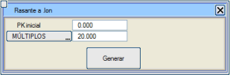
Oluşturulan noktanın türü (some, rampa, yüksek veya alçak nokta) saklanır, böylece bu boykesit 'işaret' olarak yüklenebilir.
- Minimum eğim:
Bu seçenek, aynı anda iki minimum dever ve eğim değerinin altında olan bir kesim olup olmadığını kontrol etmeyi sağlar. Fonksiyon, drenajın zor olabileceği kesimleri kontrol etmeyi sağlar ve proje mühendisine gözden geçirilmesi gereken dever kesiminin KM cinsinden konumunu bildirir.
- Filtrele:
Bu seçenek, çok sayıda noktadan oluşan poligonal bir kırmızı kot kesimini filtrelemeyi sağlar. Ayrıca, başka poligonal olmayan bölgelere (düşey kurplar,...) sahip olabilecek kırmızı kotlar içindeki poligonal kesimleri de filtrelemeyi sağlar. Filtreleme uygulandığında, daha az sayıda eleman elde edilir ancak istenen kırmızı kot korunur.
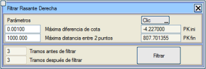
Uygulanan filtreleme derecesini değerlendirmeyi sağlayan kontrol parametreleri, her iki nokta arasındaki maksimum mesafe ve filtrelenen some ile sonuçtaki kırmızı kot arasındaki kot farkı ile tanımlanır.
- .vol Yansıt:
Bu araç, herhangi bir kırmızı kota (sağ hat, sol hat, sağ hendek,...) başka bir eksenden türetilen bir kırmızı kot atamayı sağlar. Sonucu iyileştirmek için, düşey kurplar KM ve kot ile belirlenir, birleşimin geçiş noktası olarak orijinal birleşimin somesindeki KM'ye karşılık gelen nokta kullanılır.
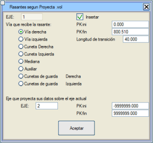
Ekleme imkanı vardır; mevcut kırmızı kot tanımları içine, tamamen belirli bir KM aralığına düşen başka bir eksenin yansıtılmış kırmızı kotlarını ekleyebilirsiniz. Yansıtılan kırmızı kotlar ile mevcut olan arasında geçiş yapmak için bir uzunluk da verilebilir.
Ayrıca, verilerini yansıtan eksendeki başlangıç ve bitiş KM'sini sınırlayabilirsiniz.
- Uydur:
Bu araç, poligonal kırmızı kot bölgelerini parabollerle otomatik olarak uydurmayı sağlar. Değiştirilen noktalar ile parabol arasındaki maksimum kot farkı ve iki nokta arasındaki maksimum mesafe verilir, böylece bir kırmızı kotun P1 ve P2 noktaları bu değeri aşarsa, değiştirilmezler. Ayrıca, bir doğru kırmızı kot kesimindeki ara noktaları ortadan kaldırmak için bir filtreleme de içerir.
- 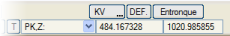Eğime göre nokta:
Mevcut düşey kurp için, önceden belirlenmiş bir eğime sahip olan noktayı hesaplar ve KM,Z değerlerini, düşey kurbun geçiş noktası olarak iletişim kutusuna yerleştirir.
Eğim, giriş ve çıkış teğetleri arasındaki bölgenin dışına çıktığında, nokta hesaplanır, ekranda gösterilir ve nokta tablosunun son konumuna eklenir.
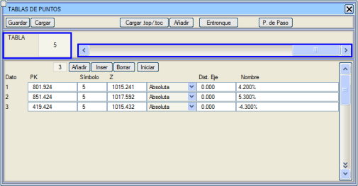
Diğer Eksen Üzerinde aracı, Arazi üzerinde aracına benzer, ancak bu, kırmızı kotun Diğer Eksenin platformundan veya bir kısmından geçmesini sağlar. Mevcut eksenin, Diğer Eksenin analitik platformunun bir kısmını kesmiş olmasını gerektirir. Arazi üzerinde gibi, sabit bir kot artışı veya güçlendirme tablosu tarafından belirlenen bir artış vermeyi sağlar. Ayrıca, mevcut eksenin önceden tanımlanmış kırmızı kotu ile Diğer Eksen tarafından türetilen kısım arasında geçiş yapmak için bir mesafe de verilebilir.
Bu araç, araziye uydurulmuş bir kırmızı kotu şu şekilde oluşturmaya yarar:
- Arama mesafesi ve ağırlık katsayısı parametreleriyle, arazinin bir yumuşatması olarak ilk bir poligonal kırmızı kot oluşturulur. (Daha büyük arama mesafesi daha fazla yumuşatma sağlar. Ve daha fazla yumuşatma ile daha büyük KV'ler elde ederiz)
- Minimum ve maksimum kırmızı kot parametreleri, yeni kırmızı kotun merkezlenmeye çalışılacağı bir bant oluşturur. (Her ikisi de negatifse kırmızı kot yarmada, pozitifse dolguda olma eğilimindedir.)
- Oluştur seçeneği, yeni kırmızı kotu şu şekilde oluşturur:
- Minimum mesafenin altındaki çok yakın noktaları kaldırır.
- Poligonal kırmızı kotun noktalarının filtrelenmesi.
- Parabollerle bir kırmızı kotun ayarlanması.
- Kv'lerin yuvarlanması ve çakışmaların giderilmesi.
- Çok güçlü bir yumuşatma yapıldığında, ayarda KV konulmayan çok hizalı kırmızı kotlar kalabilir, bu durumda minimum KV kullanılır.
Minimum bir KV tanımı, minimum bir Ldk (düşey kurp uzunluğu) ile değiştirilebilir. Minimum Kv'yi karşılamak için otomatik olarak artır: bu seçenek etkinleştirildiğinde, tanımlanan minimum KV'yi karşılamak için arama mesafesi otomatik olarak artırılır.
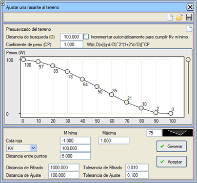
Kırmızı kot analizi
Bu bölümde aşağıdaki araçlar yer almaktadır:
- Kırmızı kotları karşılaştır:
Bir kırmızı kotu (sağ, sol, hendekler,...) başka herhangi biriyle, bir .ras dosyasından veya başka bir kırmızı kot alternatifinden okunan bir kırmızı kot dahil olmak üzere karşılaştırmayı sağlar. Liste, bir .pks dosyasına göre, bir aralık ve bir eşit aralığa göre, arazi enkesitlerine göre veya interaktif olarak olabilir.
- KM'ye göre kot:
Kırmızı kotun tanım aralığındaki her KM için kırmızı kot, eğim, kırmızı kot, deverler, yarıçap ve eksen koordinatlarını döndürür. Bu bilgilerin istendiği KM'leri belirtmek için bir .pks dosyasına başvurulabilir, klavyeden doğrudan değerler girilebilir (interaktif olarak), bir aralık ve bir eşit aralığa göre ve hatta arazi enkesitlerine göre. Ayrıca kullanıcı KM'sini de bildirir.
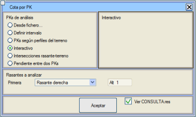
Kırmızı kot-arazi kesişimleri seçeneği ile program, bu kesişimlerin olduğu KM'lerdeki verileri bize verir.
İki KM arasındaki eğim seçeneği ile programa iki KM belirtebiliriz, böylece program tanımladığımız eşit aralık veya katlar değerinden başlayarak o kesimdeki ardışık eğimleri hesaplar. Eğimler, tanımlanan kesimin ardışık noktaları (KM'ler) arasındaki kot farkının KM farkına bölünmesiyle % olarak hesaplanır.
Sorgulamanın sonucu ekranda gösterilir. Bu bilgi, örneğin bir yakınlaştırma yapıldığında veya fare ile bir kaydırma yapıldığında ekran yeniden çizildiğinde veya yenilendiğinde kaybolur, ancak bir liste (sorgulama.res) de oluşturulur.
- .pkz Oluştur:
Bu seçenek, arazi profilinden bir .pkz dosyası oluşturmayı sağlar. Bir ASCII dosyası olduğu için, tamamen serbestçe düzenlenebilir ve değiştirilebilir.
Kırmızı kot verilerini KM veya kot olarak değiştir
Bunun için şu iki araç mevcuttur:
- 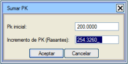KM Ekle:
Tanım verilerine sabit bir değer eklemeyi veya çıkarmayı sağlar. Yatay güzergahtaki bir elemanın değiştirilmesi nedeniyle eksen kısaldığında veya uzadığında, bu araç kullanılabilir ve böylece kırmızı kot tanımını yeniden yapmak gerekmez. Örneğin, bir kurbun yarıçapının değiştirilmesi uzunluğunu 43 m artırmışsa, önceki bitiş KM'sini bilerek kırmızı kot tanımını başlangıçtaki güzergaha uyması için dönüştürmek kolaydır.

|
BOYKESİT menüsündeki .vol Yansıt seçeneği daha kapsamlıdır; bu seçenek, iki eksenin (eski ve yeni) yatay güzergah verilerini kullanarak, kırmızı kot ve enkesit tanımının tüm verilerini eskiden yeniye yansıtır.
Her durumda, program yatay güzergah kesimlemesinde bir değişiklik tespit ettiğinde, tüm verilerini yeni KM gerçekliğine uyarlamak için .vol dosyasını otomatik olarak yeniden yapma imkanı sunar, bu da kırmızı kotun kendisini de içerir. |
- 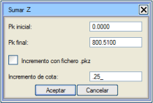Z Ekle:
Tüm tanım noktalarına sabit bir değer ekler veya çıkarır. Veriler ayrıca bir .pkz dosyası aracılığıyla da sağlanabilir.
Program, kırmızı kotların veri noktalarının kotunu, KM'lerine göre yükseltir/alçaltır ve gerekirse ilgili kot artışı değerini enterpole eder.
Kırmızı kotların elde edilmesi
Kırmızı kotları otomatik olarak elde etmek için aşağıdaki araçlara sahibiz:
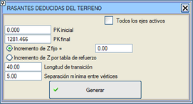Uygulama, mevcut tanıma (başlangıç ve bitiş KM'si kullanarak) mevcut araziden elde edilen ve bir kot artışı (sabit veya güçlendirme tablosuna göre) uygulanan verileri ekler. Kırmızı kotlar bu şekilde otomatik olarak oluşturulduktan sonra, her zaman yeni kesimler ve düşey kurplar eklemek, silmek veya araya eklemek mümkündür.
Köşeler arası minimum mesafe kullanılarak, yeni kırmızı kotun köşelerinin uyması gereken minimum bir mesafe garanti edilebilir. Böylece, arazinin çok yoğun köşeleri varsa, düzenlenmesi için çok fazla köşeye sahip bir kırmızı kot oluşturulması önlenebilir.
|
|
Genişletme ve iyileştirme projeleri için, GÜÇLENDİRME TABLOSU'nda veri varsa, kot artışı, eylem türüne göre buradan çıkarılır: GÜÇLENDİRME durumunda dz=Güçlendirme Kalınlığı, KAZIMA+GÜÇLENDİRME durumunda dz=Güçlendirme Kalınlığı - Kazıma Kalınlığı ve Yeniden Yapılandırma durumunda dz=Yükselt.
|
Geçiş uzunluğu değeri, yeni verileri önceki tanımla 'birleştirmek' için kullanılır (eğer bu yoksa, açıkçası hiçbir geçiş yapılmaz).
Arazinin son yüklenen olduğunu hatırlamak gerekir, bu nedenle geçici olarak belirli bir boykesit yüklenebilir, gerekli işlemler yapılabilir ve ardından orijinal arazi yeniden yüklenebilir.
Ayrıca, genişletme ve iyileştirme projeleri için daha özel bir seçenek de vardır, bu seçenek yeni platform için tanımlanan deverleri dikkate alır: Tüm platformda minimum kot farklarına sahip kırmızı kot.
- Minimum kotlar: Minimum kotlar aracı sadece üstyapı güçlendirme projelerine uygulanabilir (ve en az iki enkesitte mevcut platform bulunmadığında bir uyarı gösterir). Araç, minimum güçlendirme kalınlığını sorar ve her enkesitte, tasarlanan platformun herhangi bir noktası ile korunacak platform arasındaki kot farkının kazıma gerektirmeyeceği şekilde bir kırmızı kot oluşturur.
 Bu, arazi üzerinde seçeneğinden çok daha titiz bir çözümdür, çünkü her zaman en elverişsiz nokta dikkate alınır ve kullanıcı tarafından girilen kot artışı her zaman o noktanın üzerinde tutulur. Bu nedenle, her KM'deki en elverişsiz noktayı belirleyebilmek için yeni platformun genişlikleri ve deverleri önceden tanımlanmalıdır.
Sürecin başarılı olması için, yüklenen arazide mevcut veya önceki platformun (platform kenar çizgileriyle) tanımlanmış olması ve açıkçası, programın ortaya konan sorunu çözebilmesi için projelendirilecek platform genişlikleri ve deverlerin bir tanımının olması gerekir. Çift platform durumunda, algoritma mevcut orta refüj bölgesini dikkate almayacak şekilde hazırlanmıştır.

|
Genişletme ve iyileştirme projeleri için, GÜÇLENDİRME TABLOSU'nda veri varsa, kot artışı, eylem türüne göre buradan çıkarılır: GÜÇLENDİRME durumunda dz=Güçlendirme Kalınlığı, KAZIMA+GÜÇLENDİRME durumunda dz=Güçlendirme Kalınlığı - Kazıma Kalınlığı ve Yeniden Yapılandırma durumunda dz=Yükselt.
|
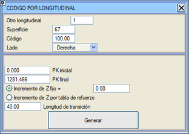
Sapmalı kırmızı kot (DD)
Bu araç, sapmalı hattın kırmızı kotunu hesaplar. Bunun için, sapmalı hatlarda, makasların başlangıcında ve sonunda eksenlerin kırmızı kotlarını ekler, makasın bir düzlemde olduğunu ve ana hattın maksimum eğimi takip ettiğini varsayarak. İki kırmızı kot ve bir birleşim eğrisi hesaplaması gerekir, bunun için:
- Dil ucu birleşim yerinde, ana hattın kotunu ve eğimini alır.
- Sapmalı hattın topuğunda, bu noktayı ana hat üzerine yansıtır ve kotunu alır, ardından eğimini, ana hat eğiminin teorik açının kosinüsüyle çarpımı olarak hesaplar.
Bu iki noktayı KM, kot ve eğimle bildiğimizde, sapmalı kırmızı kotu ve ana kırmızı kota ulaşmak için bir geçiş uzunluğunu hesaplayabiliriz.
DD: Sapmalı Kırmızı Kot ve Deverler
Bu araç, ana hattın kurpta, deverli ve boyuna eğimli olabileceğini dikkate alarak makasların neden olduğu sapmalı bir hattın kırmızı kotlarını ve deverlerini belirler.
Aracın aşağıdaki parametreleri vardır:
- Maksimum eşit aralık: makas boyunca ara noktaları analiz etmek için.
- Geçiş uzunluğu: makasın sonundan önceden tanımlanmış kırmızı kota geri dönmek için bir geçiş yapmak üzere.
- Kırmızı kotu ayarla, incelenen noktalarda kırmızı kotları ve parabolleri, maksimum bir kot farkı ve noktalar arasında maksimum bir mesafe vererek ayarlamayı sağlar.
- Elde edilen deverlerin değeri için yuvarlama.
- Aynı değere sahip ardışık ikiden fazla veri olduğunda deverleri filtrele.
|